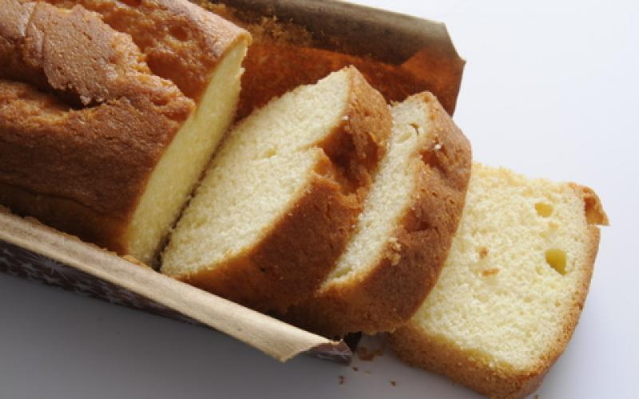

TorNada cocina
Inicio
Recetas
Reemplazos y demás

Budín vegano de vainilla
2 tazas de harina leudante.
1/2 taza de aceite de girasol.
3/4 taza de azúcar.
1/2 taza de agua.
2 cucharadas de esencia de vainilla.
Seguir leyendo...